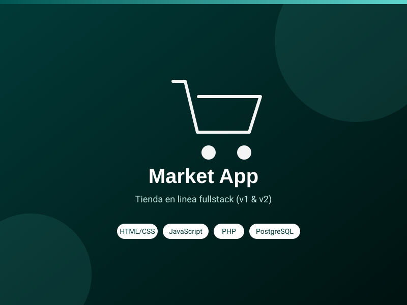

¡Hola! Soy Nicolas "Neko" Yantén
Analista de Datos & IA — Ingeniero de Sistemas en formación (CESMAG)
Sobre mí
Datos, inteligencia artificial y una base sólida en negocios internacionales
Analista de Datos & IA en formación.
Combino analítica de datos, machine learning y desarrollo de pipelines con Python, con una trayectoria en ventas y negociación internacional que pocos perfiles técnicos tienen.
- Estudios: Ing. de Sistemas (CESMAG, 7° sem.)
- Enfoque: IA & Analítica de Datos
- Email: nyantensantacruz@gmail.com
- Ubicación: Pasto, Nariño, Colombia
Soy Ingeniero de Sistemas en formación en la Universidad CESMAG, con enfoque en Inteligencia Artificial y Analítica de Datos, respaldado por mi formación previa como Tecnólogo en Negocios Internacionales (SENA). Hoy soy Monitor del Diplomado en Analítica de Datos, donde he enseñado Python (pandas, matplotlib) y R a más de 20 participantes. También presenté como ponente un proyecto de investigación sobre biometría conductual e IA aplicada a la prevención de ingeniería social en fintech — el cruce entre inteligencia artificial y seguridad es justo donde más quiero seguir creciendo. Además, sigo construyendo software por mi cuenta (aplicaciones web y proyectos de electrónica), lo que me da un rango poco común: entiendo tanto los datos como el código que los mueve.
Habilidades
Herramientas que combino para trabajar con datos, IA y negocio
* Niveles autoevaluados según práctica real en estudios, docencia y proyectos propios.
Trayectoria
Formación y experiencia
Educación
Ingeniería de Sistemas
2024 – 2027 (en curso) · 7° semestre
Universidad CESMAG, Pasto
Enfoque en Inteligencia Artificial y Analítica de Datos.
Tecnólogo en Negocios Internacionales
2020 – 2022
SENA, Pasto
Certificaciones
Using Python to Access Web Data
University of Michigan · Coursera · Ene. 2025
Computational Thinking for Problem Solving
University of Pennsylvania · Coursera · Dic. 2024
Primeros pasos en el diseño UX
Google · Coursera · Nov. 2024
Experiencia
Monitor de Diplomados – Analítica de Datos
2025 – Presente
Universidad CESMAG / Independiente
- Instruí a más de 20 participantes en Python (pandas, matplotlib) y R para análisis de datos
- Facilité sesiones prácticas en Jupyter Notebook adaptando el nivel a perfiles técnicos y no técnicos
Auxiliar Virtual & Gestión de Redes Sociales
2023 – Presente
Freelance / Independiente
- Gestión de redes sociales y contenido digital, optimizando engagement y posicionamiento de marca
- Soporte técnico y administrativo remoto, con reportes automatizados en Python y Excel
Especialista en Logística de Exportación
Feb. 2022 – Feb. 2023
Arowwai Industries
- Gestión integral de clientes internacionales: negociación de contratos y seguimiento de pedidos
- Habilitación de exportaciones hacia China, gestionando documentación aduanera y fitosanitaria
Qué hago
Las áreas en las que más me muevo
Análisis y Visualización de Datos
Python (pandas, matplotlib) y Excel avanzado para transformar datos en decisiones.
Marketing Digital & Redes
Gestión de contenido, posicionamiento digital y atención al cliente multicanal.
Proyectos
Investigación, datos y también software — mi rango completo
{kind=link}
Otros proyectos técnicos
- Todos
- Web
- IoT

{kind=link}
{kind=link}
{kind=link}
{kind=link}
Contacto
¿Tienes un proyecto en mente o quieres saludar? Escríbeme
Este sitio se aloja en GitHub Pages, así que no puede procesar formularios por sí solo — pero escribirme un correo directo funciona igual de bien.
Escríbeme un correo